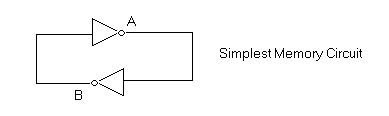
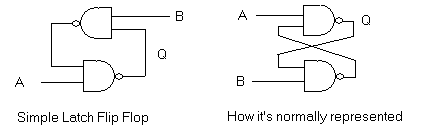
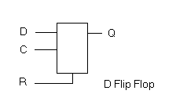
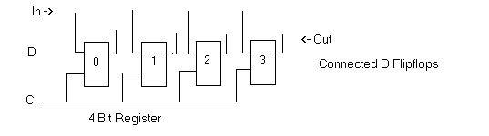
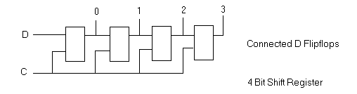
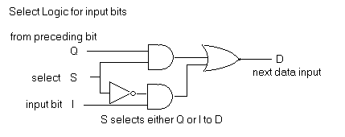
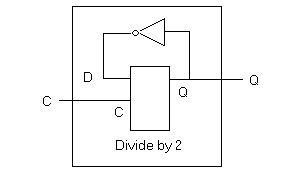
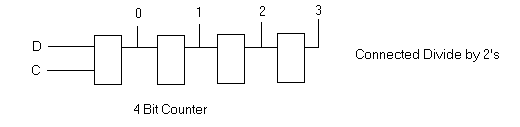
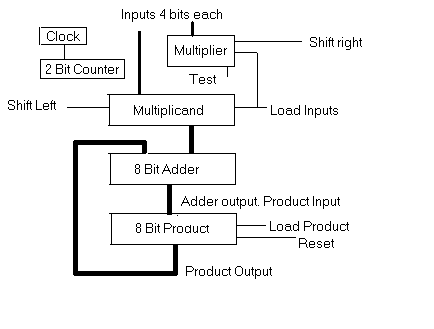

In this study we will look at how logic gates may be used for computer memory, counters and shift registers. We'll cap it off with a discussion about a possible circuit for binary multiplication. I'm assuming you have already studied "Logic Circuits - Part One" fairly throughly. As before we will simulate these circuits in Python by extending the LC class in order to watch them in action.
So far all of the circuits we have seen process inputs to yield outputs. The information flow has been "left to right" in the diagrams. Occasionly this flow can be fairly involved; for example, in the 4 bit adder of the previous chapter carry signals must be transmitted from bit to bit. However in order for logic gates to be used as memory devices we need something more. With "positive feedback" an output is used to reinforce its own input in order to hold a value after the original input has gone. Such circuits go by the generic name of "flip flops".
Let's look at the simplest possible example of this. Here we have 2 inverter (NOT) gates connected in a circular fashion to provide feedback. Recall that a NOT gate's output is always the opposite of its input.

So if the output A is 1 this would make output B 0. And if B is 0 then it would in turn hold A at 1. This is the positive feedback that provides the ability of the circuit to "remember" it value. The situation could just as easily be reversed with B at 1 and A at 0. In either case the arrangement is stable.
Now if for some reason both outputs were ever the same (such as when they are being powered up), both would try to change. Whichever gate was tiniest bit faster would flip its output just ahead of the other and the circuit would fall into one of the two stable states.
Of course this circuit is rather useless since we have no way of changing the state. That's about to be fixed with our next flip flop.
The Latch Flip Flop
The next flip flop, the LATCH, is similar but has inputs as well as outputs. It uses 2 NAND gates each of which, as you recall, consists of an AND gate followed by an inverter. The output of a NAND gate is 0 only when both inputs are 1.
Look at the circuit on the left. If the inputs A and B are both 1 (the normal mode) this circuit would act the same as the one above. But if input A is taken to zero then Q will be forced to 1. Q being 1 and input B being one makes the output of the upper NAND gate 0 which holds Q at 1 even after A is taken back to 1. The opposite happens when B is temporarily taken to 0. So a LATCH circuit remembers which input was last "dropped" to zero.

A LATCH flip flop can be simulated with the following extension of the LC class. The first thing we'll do is define a two input NAND gate. We've made it a basic gate with an evaluation function but it could have as easily been programmed as a composite gate consisting of an AND gate and a NOT. Compare this code with the class definition for an AND gate in the prior study. You should find only one tiny difference.
class Nand (Gate2) : # two input NAND Gate def __init__ (self, name) : Gate2.__init__ (self, name) def evaluate (self) : self.C.set(not(self.A.value and self.B.value))
And here is the code for the LATCH flip flop as a composite gate where 3 connectors connect the 2 NAND gates to form the circuit and provide the A and B inputs along with the output Q. This is followed by a test function which will let us drop either the A or B input temporarily to zero and then immediately raise it back to one.
class Latch (LC) : def __init__ (self, name) : LC.__init__ (self, name) self.A = Connector(self,'A',1) self.B = Connector(self,'B',1) self.Q = Connector(self,'Q',monitor=1) self.N1 = Nand ("N1") self.N2 = Nand ("N2") self.A.connect ([self.N1.A]) self.B.connect ([self.N2.B]) self.N1.C.connect ([self.N2.A, self.Q]) self.N2.C.connect ([self.N1.B]) def testLatch () : x = Latch("ff1") x.A.set(1); x.B.set(1) while 1 : ans = raw_input("Input A or B to drop:") if ans == "" : break if ans == 'A' : x.A.set(0); x.A.set(1) if ans == 'B' : x.B.set(0); x.B.set(1)
Let's run the test function.
>>> from logic2 import * >>> testFlipFlop() Connector ff1-Q set to 0 Connector ff1-Q set to 1 Input A or B to drop:A Input A or B to drop:A Input A or B to drop:B Connector ff1-Q set to 0 Input A or B to drop:A Connector ff1-Q set to 1 Input A or B to drop: >>>
As we can see, Q starts out at zero and on its own shifts to one. This is the racing condition we talked earlier and results from the way we connected the NAND gates in the circuit. As A is dropped Q remains one. Not until B is dropped does Q drop as well. It stays zero until A is dropped again.
The "D" Flip Flop
The next flip flop (D) is somewhat more complex in its behaviour. It can also be made from simple gates (about 8 of them) but we're going to program it as a basic LC circuit with an evaluation method. This "D" flip flop has two inputs (C and D) and an output Q. The "D" input is "Data In" and the "C" input is the clock. As the clock falls from 1 to 0 "Q" is set to whatever value "D" has at that instant. And "Q" can't change this setting until "C" again falls from 1 to 0. For this reason this is called an edge triggered flip flop. This is a bit like a camera where D is the lens bringing in the image; Q is the film; and C is the shutter button. As you click the shutter the film is exposed but even if you continue to hold the shutter button down the shutter itself closes independently. To take the next picture you must release the shutter button in order to click it again. Here is the symbol for a "D" flip flop.

The extra input, "R", is a reset. If it is zero then Q is forced to zero. If "R" is one then the "D" flip flop works as stated above. We will mostly ignore the reset input in the circuit diagrams below to keep things less confusing.
Here is the class to represent it as a basic LC gate (without the reset).
class DFlipFlop (LC) : def __init__ (self, name) : LC.__init__ (self, name) self.D = Connector(self,'D',1) self.C = Connector(self,'C',1) self.Q = Connector(self,'Q') self.Q.value=0 self.prev=None def evaluate (self) : if self.C.value==0 and self.prev==1 : # Clock drop self.Q.set(self.D.value) self.prev = self.C.value
The attribute 'self.prev' saves the previous value of the C input so that the evaluate function will set Q only on the transition from one to zero.
The Simple Data Register
We can use D flip flops to build registers that hold binary numbers. Each flip flop remembers a single "bit" of the number and by clocking them together the binary number on the input lines is stored in the register whenever the clock line is dropped. Here is a diagram of a 4 bit data register.

In practice the reset inputs would also be connected together. This would allow the register to be set to zero independently of what is on the input lines. We'll use that feature later.
The Shift Register
If we change the connections so that each output becomes the data input for the the next bit, we'll have a shift register. Each drop of the clock line sets each bit to whatever was in the neighbor on the left. Here is where it becomes critical that the individual flip flops only respond to the edge of the clock drop. If they continued to load data while the clock was 0, the data would simply flush through and all of the bits would be set to the leftmost input.

We'll be using two shift registers below for multiplication. One shifts bits from low to high (multiply by 2), and the other will shift bits from high to low (divide by 2). Either is possible, of course. It's just however we connect the flipflop outputs to the next input; low to high or high to low.
It is also possible (and desirable) to be able to load a number from input lines into a shift register. This can be done with some selection logic between each bit that channels either the input bit I or the neighboring Q output into each D input.

If S is 1 then the lower AND gate will block signal I. D will be the same value as Q. If S is 0 then the opposite happens and D will take whatever value I has.
This gating would be used between each pair of bits. The S lines are connected together to control whether a clock drop loads data from the input lines "I", or from the preceding bits output "Q".
The Divide by 2 Circuit
The following circuit feeds the Q output of its D flip flop back to its D input inverted. This creates a "Divide by 2" circuit. The D input is always opposite of Q so that each time the clock drops, Q changes, going either 0 to 1 or 1 to 0. Therefore Q itself drops at exactly half the rate of C.

Here is a class to simulate a divide by 2 circuit followed by a test function. It's built as a composite gate containing both a D flip flop and a NOT gate.
class Div2 (LC) : def __init__ (self, name) : LC.__init__ (self, name) self.C = Connector(self,'C',activates=1) self.D = Connector(self,'D') self.Q = Connector(self,'Q',monitor=1) self.Q.value=0 self.DFF = DFlipFlop('DFF') self.NOT = Not('NOT') self.C.connect ([self.DFF.C]) self.D.connect ([self.DFF.D]) self.DFF.Q.connect ([self.NOT.A,self.Q]) self.NOT.B.connect ([self.DFF.D]) self.DFF.Q.activates = 1 self.DFF.D.value = 1 - self.DFF.Q.value def testDivBy2 () : x = Div2("X") c = 0; x.C.set(c) while 1 : raw_input("Clock is %d. Hit return to toggle clock" % c) c = not c x.C.set(c)
Let's run the test function. Notice that Q drops to 0 with every second clock drop.
>>> testDivBy2() Clock is 0. Hit return to toggle clock Clock is 1. Hit return to toggle clock Connector X-Q set to 1 Clock is 0. Hit return to toggle clock Clock is 1. Hit return to toggle clock Connector X-Q set to 0 Clock is 0. Hit return to toggle clock Clock is 1. Hit return to toggle clock Connector X-Q set to 1
The Counting Register
Multiple Divide-by-2's can be used to build binary counting registers. To get an idea of how this works, consider for a moment the tachometer on your car. With each mile (or kilometer) driven the units digit advances by one. Each time a digit drops from "9" to "0" the digit to its left advances by one. Of course binary numbers are simpler. If we had binary tachometers then each mile driven would flip the units bit and each drop from "1" to "0" would advance the bit to its left. We can achieve this by simply connecting Divide-by-2's together, output to input and we have our binary counter.

In practice we would want to add 2 additional features. We would use the same selection logic as we did in the shift register to enable a number to be loaded to the counter from input lines. And we would connect the reset lines together so that the counter could be easily reset to zero.
Here is a Python simulation of the above circuit without these extra features.
class Counter (LC) : def __init__ (self, name) : LC.__init__ (self, name) self.B0 = Div2('B0') self.B1 = Div2('B1') self.B2 = Div2('B2') self.B3 = Div2('B3') self.B0.Q.connect( self.B1.C ) self.B1.Q.connect( self.B2.C ) self.B2.Q.connect( self.B3.C )
And here is a test function. Each time through the loop the 4 output bits of the counter are printed and then the clock is toggled 1 to 0 and then back to 1.
def testCounter () : x = Counter("x") # x is a four bit counter x.B0.C.set(1) # set the clock line 1 while 1 : print "Count is ", x.B3.Q.value, x.B2.Q.value, print x.B1.Q.value, x.B0.Q.value, ans = raw_input("\nHit return to pulse the clock") x.B0.C.set(0) # toggle the clock x.B0.C.set(1)
>>> testCounter() Count is 0 0 0 0 Hit return to pulse the clock Connector B0-Q set to 1 Count is 0 0 0 1 Hit return to pulse the clock Connector B0-Q set to 0 Connector B1-Q set to 1 Count is 0 0 1 0 Hit return to pulse the clock Connector B0-Q set to 1 Count is 0 0 1 1 Hit return to pulse the clock Connector B0-Q set to 0 Connector B1-Q set to 0 Connector B2-Q set to 1 Count is 0 1 0 0 Hit return to pulse the clock Connector B0-Q set to 1 Count is 0 1 0 1
Multiplication
We now have all the pieces to build a binary multiplier circuit. We won't actually do that, but we will look at how the major parts are connected and the logic required to make those parts work together.
First consider the following multiplication example.
233 (multiplicand) * 123 (multiplier) ------ 699 (3 times 233) 4660 (2 times 233) 23300 (1 times 233) ------ 28659 (product)
This should hold no surprises. We all learned to do this in school. Each digit in the multiplier (123) is multiplied by the multiplicand (233), shifted appropriately and then the results are added together.
Now let's look at something simliar in binary. Here we will multiply 2 6-bit numbers whose decimal values are 38 and 36. Each one bit in a binary will represent the appropriate power of two.
100110 (multiplicand - decimal 38: 32+4+2) * 100100 (multiplier - decimal 36: 32+4) -------- 000000 000000 100110 000000 000000 100110 ------------- 10101011000 (product - decimal 1368: 1024+256+64+16+8)
Now a number in binary (say 1001) has a decimal value of 1*1 + 0*2 + 0*4 + 1*8. Or we could say simply 8+1. In the multiplication above we have in decimal 38*36 which is 1368. Notice how simple the multiplication is however. For each bit in the multiplier the multiplicand is simply added to the product if that bit is one. Then the multiplicand is shifted to the left (multiplied by 2).
This can be duplicated with the circuits we have seen so far.
Now we would need 6 decimal digits to hold the product of 2 3-digit numbers. When multiplying two 4 bit numbers we need to have room for an 8 bit result.
Look at the following circuit diagram. We have two shift registers for the multiplier and multiplicand. In the 4 step procedure the multiplicand will be shifted to the left so that it is properly placed to be added to the product in the 8 bit adder. The multiplier is shifted to the right in order that the bit that we are testing is conveniently in the lowest bit position. The thick lines represent either 4 or 8 individual lines.
To start the multiplication the multiplier register and multiplicand are first loaded with their 4 bit values. The 8 bit product register and the 2 bit counter are reset to 0. Next a clock signal is generated and on each transistion several things take place with the help of some gating logic (which is not shown).

The clock signal will alternate between a 0 and 1 value on the order of one nanosecond. It needs to be slow enough so that signals can perculate through the adder completely. Light travels about a foot each nanosecond and when computers were built from discrete components this would have been close to the speed limit.
Here is what needs to happen in each of the four steps.
As the clock goes from 0 to 1 ... if bit 0 of the multiplier is one the product register is loaded with the sum of itself and the multiplicand As the clock goes from 1 to 0 ... the counter register is incremented. the multiplier is shifted to the right the multiplicand is shifted to the left
When the counter resets to zero stop and read product from the product register.
Now there are lot of details that we did not build circuitry for but you should be able to get enough of an idea that you could do this if you had to.
Negative Numbers
There is a scheme to represent negative numbers in binary that works as follows. Suppose you get into a brand new car and drive it in reverse for one mile. Assuming the odometer started at zero it should now read 999999. Now if you drive forward 6 miles the odometer will read 000005. So 999999 was a convenient representation for -1.
The same is done with binary numbers and the scheme is called "two's complement". 4 bit number which could take values from 0 to 15. (0000 to 1111) would instead take values -8 to -1 (1000 to 1111) and 0 to 7 (0000 to 0111).
This works automatically in the adder, since it will play the same trick that we saw with the odometer above. However the multiplier requires just a little help. Consider 2*-1 which is 0010 * 1111 in 4 bit two's complement. The 8 bit result should be 11111110, which is -2. What needs to be changed in the steps above to make this possible?
Taking it Further
Here are a few ideas for exercises.
Write a test function for the shift register.
Create a D flip flop from simple gates. Here a couple of hints. It is easy to make one using a LATCH circuit and some extra gating if it is NOT edge triggered. For edge triggering consider two in a row.
Work out, to some extent, actual control circuitry for the multiplier.
I would be happy share ideas. Email me at cmeyers@guardnet.com